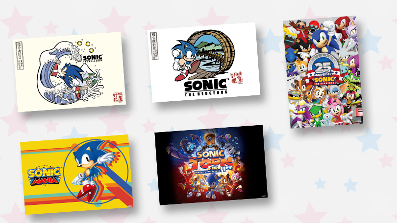

東京スカイツリータウン®「テレビ局公式ショップ～ツリービレッジ～」 「ソニック25周年カフェ」が好評につき、再オープンが決定！
2016年12月1日（木）～12月16日（金）の間、展開していた東京スカイツリータウン®「テレビ局公式ショップ～ツリービレッジ～」とのコラボレーションカフェ「ソニック25周年カフェ」が好評につき、2017年1月5日（木） ～ 2017年1月31日（火）（予定）の間、再オープンすることが決定。
東京スカイツリータウン®「テレビ局公式ショップ～ツリービレッジ～」に再オープンする、「ソニック」シリーズ25周年を記念したコラボレーションカフェ「ソニック25周年カフェ」には、ソニックをはじめ、テイルス、ナックルズ、エミー、シャドウ、シルバー、チップなどをイメージした、おいしくて楽しいメニューが勢揃いしています。また、メニューの注文1品につき、オリジナルのポストカード全5種の中から1枚をプレゼントいたします。
ソニックシリーズのキャラクターたちで飾られた外観にも注目の、東京スカイツリータウン®「テレビ局公式ショップ～ツリービレッジ～ ソニック25周年カフェ」にぜひお越しください。
| イベント名称 | 東京スカイツリータウン®「テレビ局公式ショップ～ツリービレッジ～ ソニック25周年カフェ」 |
|---|---|
| 開催日時 | 2017年1月5日（木）～2017年1月31日（火）（予定）まで |
| 開催場所 | 東京スカイツリータウン®「テレビ局公式ショップ～ツリービレッジ～」 （東京都墨田区押上1-1-2 東京スカイツリータウン・ソラマチウエストヤード4F） TEL:03-5610-3181 |
| 営業時間 | 9:00～21:00（飲食は10:00～21:00）（休日は東京スカイツリータウン®に準ずる） |
| Webページ | テレビ局公式ショップツリービレッジ |
- ※最新情報はツリービレッジ公式twitter（@treevillage_jp）、もしくは店舗までお問い合わせください。
- ※こちらはテイクアウトがメインの店舗のため、事前予約はございません。（若干数、店舗周辺に座って食事ができるフリースペースがございます）お気軽にお越しください。
メニュー
フード
ソニックの音速チリドック
840円(税込)
ソニックの大好物のチリドッグが、ソニック25周年カフェにも登場！ゲーム中のリングに見立てたオニオンリングもうれしい、定番の一皿！？
シャドウのブラックハンバーガー
1,000円(税込)
漆黒のハリネズミ、シャドウをモチーフにした真っ黒なバンズのハンバーガー！これを食べたらダークエネルギーが満ちて来るかも...！？
エッグマン帝国のたこ焼き
650円(税込)
Dr.エッグマンの作ったロボット兵「エッグポーン」の様にまん丸な形をした、特製たこ焼き！小さなエッグマン帝国軍を、あなたのお手元に！
和ソニックの今川焼
650円(税込)
浮世絵風ソニックイラストの入った今川焼！図柄が今川焼の丸いキャンバスにぴったりはまっていて、食べるのをためらっちゃうかも！？
ソニックマニアなパンケーキ
840円(税込)
アイコンチックなソニック、テイルス、ナックルズをあしらった、カラフルなパンケーキ。クラシックなデザインと味わいを、ご堪能あれ...！
チップのチョコチップサンデー

800円(税込)
チップの大好物で、彼の名前の由来にもなったアポトスの名物スイーツがソニック25周年カフェに！この再現度、ぜひお楽しみいただきたいです～！
ドリンク
ソニック ラテ
550円(税込)
元気いっぱいに走るソニックをあしらったカフェラテ！これを飲んだら思わず走り出したくなってしまうかも！？
シャドウ ココア
550円(税込)
白いミルクフォームの上で不敵にたたずむシャドウをあしらった、究極のココアです！完璧な一日のはじまりに、どうぞ！
シルバー カフェモカ
550円(税込)
サイキックを発動するシルバーをあしらった、カフェモカ。コップの丸いフチが、まるでシルバーの作り出すバリアーのよう！？
テイルスのホットレモネード
550円(税込)
テイルスラボ謹製のホットレモネード。甘いホットドリンクで身体も心も一気に回復！これを飲めばテイルスのように発明がはかどるかも！？
エミーのピンクピーチソーダ
600円(税込)
ラブリーな夢見る少女、エミーをイメージしたピーチソーダ。これを飲めば女子力がアップして、エミーみたいになれるかも！？
チャオのぷるぷるソーダ
600円(税込)
可愛らしいチャオをイメージしたさわやかドリンク。やさしい気持ちになれることうけ合い...！
ナックルズのストロベリーソーダ

600円(税込)
パワフルなナックルズをイメージしたストロベリーソーダ。フツフツと炭酸の湧き上がる赤いドリンクで気合とパワーがコブシにみなぎるかも！？
特典
お買い上げ1品につき、オリジナル・ポストカードプレゼント！（全5種）
何が出るかはお楽しみ！！
※絵柄は選べません。